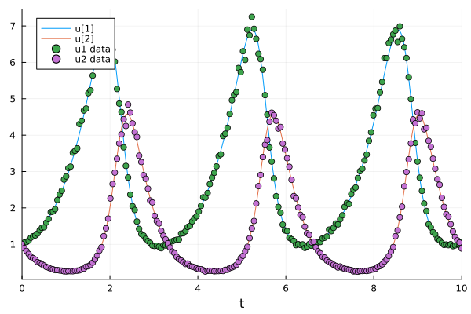
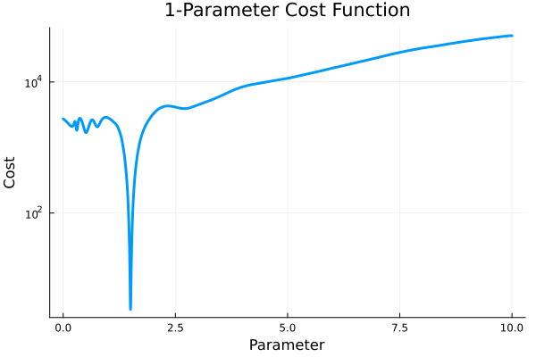
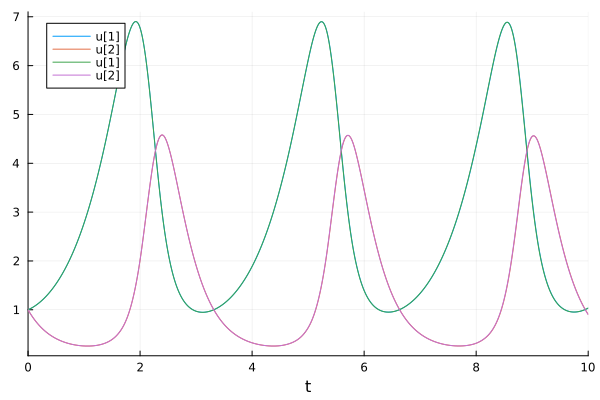

Optimization Problems#
Wikipedia: https://en.wikipedia.org/wiki/Optimization_problem
Given a target (loss) function and a set of parameters. Find the parameters set (subjects to constraints) to minimize the function.
Curve fitting: LsqFit.jl
General optimization problems: Optim.jl
Use with ModelingToolkit: Optimization.jl
Curve fitting using LsqFit#
LsqFit.jl package is a small library that provides basic least-squares fitting in pure Julia.
using LsqFit
@. model(x, p) = p[1] * exp(-x * p[2])
model (generic function with 1 method)
Generate data
xdata = range(0, stop=10, length=20)
ydata = model(xdata, [1.0 2.0]) + 0.01 * randn(length(xdata))
20-element Vector{Float64}:
0.9907698733040153
0.35604392748819824
0.10877636417926459
0.039987399177125973
0.008326770047816387
-0.0001749218598639272
0.01191138370618043
-0.010317066548776264
-0.0017025032118731691
0.006083227355373311
0.012419693363010102
0.0023727735155543938
-0.027547393077237994
-0.010013481799379215
-0.007052519315875767
-0.0069150037249607185
0.0038431873053406574
0.005925785098905736
-0.011294820986911322
-0.014671086760553603
Initial guess
p0 = [0.5, 0.5]
2-element Vector{Float64}:
0.5
0.5
Fit the model
fit = curve_fit(model, xdata, ydata, p0; autodiff=:forwarddiff)
LsqFit.LsqFitResult{Vector{Float64}, Vector{Float64}, Matrix{Float64}, Vector{Float64}, Vector{LsqFit.LMState{LsqFit.LevenbergMarquardt}}}([0.992697357446109, 2.003283404867884], [0.0019274841420936495, -0.010172830068548022, 0.011730470187691439, 0.001999043857532537, 0.006301955434545271, 0.0052717958451559705, -0.0101355540583229, 0.010935793036288022, 0.0019180770800144619, -0.006008118088898734, -0.012393524134063244, -0.0023636557518506994, 0.02755056984699018, 0.010014588635044886, 0.007052904954523313, 0.006915138087423995, -0.0038431404913824283, -0.005925768788199371, 0.011294826669813435, 0.014671088740564504], [1.0 0.0; 0.34841545091795684 -0.18203741969455275; … ; 5.7247076065260524e-9 -5.383802001931627e-8; 1.9945765821012377e-9 -1.9800109022757906e-8], true, Iter Function value Gradient norm
------ -------------- --------------
, Float64[])
The parameters
coef(fit)
2-element Vector{Float64}:
0.992697357446109
2.003283404867884
Curve fitting using Optimization.jl#
using Optimization
using OptimizationOptimJL
@. model(x, p) = p[1] * exp(-x * p[2])
model (generic function with 1 method)
Generate data
xdata = range(0, stop=10, length=20)
ydata = model(xdata, [1.0 2.0]) + 0.01 * randn(length(xdata))
function lossl2(p, data)
x, y = data
y_pred = model(x, p)
return sum(abs2, y_pred .- y)
end
p0 = [0.5, 0.5]
data = [xdata, ydata]
prob = OptimizationProblem(lossl2, p0, data)
res = solve(prob, Optim.NelderMead())
retcode: Success
u: 2-element Vector{Float64}:
1.0022451124469054
2.0599972211791684
2D Rosenbrock Function#
From: https://docs.sciml.ai/ModelingToolkit/stable/tutorials/optimization/ Wikipedia: https://en.wikipedia.org/wiki/Rosenbrock_function
Find \((x, y)\) that minimizes the loss function \((a - x)^2 + b(y - x^2)^2\)
using ModelingToolkit
using Optimization
using OptimizationOptimJL
@variables begin
x, [bounds = (-2.0, 2.0)]
y, [bounds = (-1.0, 3.0)]
end
@parameters a b
Define the target (loss) function The optimization algorithm will try to minimize its value
loss = (a - x)^2 + b * (y - x^2)^2
Build the OptimizationSystem
@mtkbuild sys = OptimizationSystem(loss, [x, y], [a, b])
Initial guess
u0 = [x => 1.0, y => 2.0]
2-element Vector{Pair{Symbolics.Num, Float64}}:
x => 1.0
y => 2.0
parameters
p = [a => 1.0, b => 100.0]
2-element Vector{Pair{Symbolics.Num, Float64}}:
a => 1.0
b => 100.0
ModelingToolkit can generate gradient and Hessian to solve the problem more efficiently.
prob = OptimizationProblem(sys, u0, p, grad=true, hess=true)
OptimizationProblem. In-place: true
u0: 2-element Vector{Float64}:
1.0
2.0
Solve the problem The true solution is (1.0, 1.0)
u_opt = solve(prob, GradientDescent())
retcode: Success
u: 2-element Vector{Float64}:
1.0000000135463598
1.0000000271355158
Adding constraints#
OptimizationSystem(..., constraints = cons)
@variables begin
x, [bounds = (-2.0, 2.0)]
y, [bounds = (-1.0, 3.0)]
end
@parameters a = 1 b = 100
loss = (a - x)^2 + b * (y - x^2)^2
Constraints are define using ≲ (\lesssim) or ≳ (\gtrsim)
cons = [
x^2 + y^2 ≲ 1,
]
@mtkbuild sys = OptimizationSystem(loss, [x, y], [a, b], constraints=cons)
u0 = [x => 0.14, y => 0.14]
prob = OptimizationProblem(sys, u0, grad=true, hess=true, cons_j=true, cons_h=true)
OptimizationProblem. In-place: true
u0: 2-element Vector{Float64}:
0.14
0.14
Use interior point Newton method for constrained optimization
solve(prob, IPNewton())
┌ Warning: The selected optimization algorithm requires second order derivatives, but `SecondOrder` ADtype was not provided.
│ So a `SecondOrder` with SciMLBase.NoAD() for both inner and outer will be created, this can be suboptimal and not work in some cases so
│ an explicit `SecondOrder` ADtype is recommended.
└ @ OptimizationBase ~/.julia/packages/OptimizationBase/gvXsf/src/cache.jl:49
retcode: Success
u: 2-element Vector{Float64}:
0.7864151541684254
0.6176983125233897
Parameter estimation#
From: https://docs.sciml.ai/DiffEqParamEstim/stable/getting_started/
DiffEqParamEstim.jl is not installed with DifferentialEquations.jl. You need to install it manually:
using Pkg
Pkg.add("DiffEqParamEstim")
using DiffEqParamEstim
The key function is DiffEqParamEstim.build_loss_objective(), which builds a loss (objective) function for the problem against the data. Then we can use optimization packages to solve the problem.
Estimate a single parameter from the data and the ODE model#
Let’s optimize the parameters of the Lotka-Volterra equation.
using OrdinaryDiffEq
using Plots
using DiffEqParamEstim
using ForwardDiff
using Optimization
using OptimizationOptimJL
Example model
function lotka_volterra!(du, u, p, t)
du[1] = dx = p[1] * u[1] - u[1] * u[2]
du[2] = dy = -3 * u[2] + u[1] * u[2]
end
u0 = [1.0; 1.0]
tspan = (0.0, 10.0)
p = [1.5] ## The true parameter value
prob = ODEProblem(lotka_volterra!, u0, tspan, p)
ODEProblem with uType Vector{Float64} and tType Float64. In-place: true
Non-trivial mass matrix: false
timespan: (0.0, 10.0)
u0: 2-element Vector{Float64}:
1.0
1.0
True solution
sol = solve(prob, Tsit5())
retcode: Success
Interpolation: specialized 4th order "free" interpolation
t: 34-element Vector{Float64}:
0.0
0.0776084743154256
0.2326451370670694
0.42911851563726466
0.679082199936808
0.9444046279774128
1.2674601918628516
1.61929140093895
1.9869755481702074
2.2640903679981617
⋮
7.5848624442719235
7.978067891667038
8.483164641366145
8.719247691882519
8.949206449510513
9.200184762926114
9.438028551201125
9.711807820573478
10.0
u: 34-element Vector{Vector{Float64}}:
[1.0, 1.0]
[1.0454942346944578, 0.8576684823217128]
[1.1758715885890039, 0.6394595702308831]
[1.419680958026516, 0.45699626144050703]
[1.8767193976262215, 0.3247334288460738]
[2.5882501035146133, 0.26336255403957304]
[3.860709084797009, 0.27944581878759106]
[5.750813064347339, 0.5220073551361045]
[6.814978696356636, 1.917783405671627]
[4.392997771045279, 4.194671543390719]
⋮
[2.6142510825026886, 0.2641695435004172]
[4.241070648057757, 0.30512326533052475]
[6.79112182569163, 1.13452538354883]
[6.265374940295053, 2.7416885955953294]
[3.7807688120520893, 4.431164521488331]
[1.8164214705302744, 4.064057991958618]
[1.146502825635759, 2.791173034823897]
[0.955798652853089, 1.623563316340748]
[1.0337581330572414, 0.9063703732075853]
Create a sample dataset with some noise.
ts = range(tspan[begin], tspan[end], 200)
data = [sol.(ts, idxs=1) sol.(ts, idxs=2)] .* (1 .+ 0.03 .* randn(length(ts), 2))
200×2 Matrix{Float64}:
0.992931 1.0058
1.04495 0.892355
1.05944 0.816274
1.09867 0.733301
1.18063 0.65518
1.22018 0.618778
1.24194 0.579548
1.29263 0.508841
1.38401 0.486325
1.45216 0.449797
⋮
0.981894 2.02688
0.993378 1.82693
0.97382 1.75651
1.00187 1.55181
0.947521 1.35005
0.967096 1.20347
1.00327 1.10831
0.978618 1.04457
1.06113 0.88342
Plotting the sample dataset and the true solution.
plot(sol)
scatter!(ts, data, label=["u1 data" "u2 data"])

DiffEqParamEstim.build_loss_objective() builds a loss function for the ODE problem for the data.
We will minimize the mean squared error using L2Loss().
Note that
the data should be transposed.
Uses
AutoForwardDiff()as the automatic differentiation (AD) method since the number of parameters plus states is small (<100). For larger problems,Optimization.AutoZygote()is more efficient.
alg = Tsit5()
cost_function = build_loss_objective(
prob, alg,
L2Loss(collect(ts), transpose(data)),
Optimization.AutoForwardDiff(),
maxiters=10000, verbose=false
)
plot(
cost_function, 0.0, 10.0,
linewidth=3, label=false, yscale=:log10,
xaxis="Parameter", yaxis="Cost", title="1-Parameter Cost Function"
)

There is a dip (minimum) in the cost function at the true parameter value (1.5). We can use an optimizer e.g., Optimization.jl, to find the parameter value that minimizes the cost. (1.5 in this case)
optprob = Optimization.OptimizationProblem(cost_function, [1.42])
optsol = solve(optprob, BFGS())
retcode: Success
u: 1-element Vector{Float64}:
1.5009096872530328
The fitting result:
newprob = remake(prob, p=optsol.u)
newsol = solve(newprob, Tsit5())
plot(sol)
plot!(newsol)

Estimate multiple parameters#
Let’s use the Lotka-Volterra (Fox-rabbit) equations with all 4 parameters free.
function f2(du, u, p, t)
du[1] = dx = p[1] * u[1] - p[2] * u[1] * u[2]
du[2] = dy = -p[3] * u[2] + p[4] * u[1] * u[2]
end
u0 = [1.0; 1.0]
tspan = (0.0, 10.0)
p = [1.5, 1.0, 3.0, 1.0] ## True parameters
alg = Tsit5()
prob = ODEProblem(f2, u0, tspan, p)
sol = solve(prob, alg)
retcode: Success
Interpolation: specialized 4th order "free" interpolation
t: 34-element Vector{Float64}:
0.0
0.0776084743154256
0.2326451370670694
0.42911851563726466
0.679082199936808
0.9444046279774128
1.2674601918628516
1.61929140093895
1.9869755481702074
2.2640903679981617
⋮
7.5848624442719235
7.978067891667038
8.483164641366145
8.719247691882519
8.949206449510513
9.200184762926114
9.438028551201125
9.711807820573478
10.0
u: 34-element Vector{Vector{Float64}}:
[1.0, 1.0]
[1.0454942346944578, 0.8576684823217128]
[1.1758715885890039, 0.6394595702308831]
[1.419680958026516, 0.45699626144050703]
[1.8767193976262215, 0.3247334288460738]
[2.5882501035146133, 0.26336255403957304]
[3.860709084797009, 0.27944581878759106]
[5.750813064347339, 0.5220073551361045]
[6.814978696356636, 1.917783405671627]
[4.392997771045279, 4.194671543390719]
⋮
[2.6142510825026886, 0.2641695435004172]
[4.241070648057757, 0.30512326533052475]
[6.79112182569163, 1.13452538354883]
[6.265374940295053, 2.7416885955953294]
[3.7807688120520893, 4.431164521488331]
[1.8164214705302744, 4.064057991958618]
[1.146502825635759, 2.791173034823897]
[0.955798652853089, 1.623563316340748]
[1.0337581330572414, 0.9063703732075853]
ts = range(tspan[begin], tspan[end], 200)
data = [sol.(ts, idxs=1) sol.(ts, idxs=2)] .* (1 .+ 0.01 .* randn(length(ts), 2))
200×2 Matrix{Float64}:
1.00722 0.998884
1.04194 0.902643
1.071 0.812161
1.08935 0.748317
1.14447 0.673325
1.22265 0.610484
1.26416 0.566865
1.32376 0.526703
1.39381 0.483488
1.45224 0.438782
⋮
0.997702 2.06138
0.977479 1.85614
0.954559 1.66959
0.938922 1.50314
0.938475 1.34679
0.964707 1.23251
0.998553 1.09742
1.01088 1.01277
1.02419 0.908387
Then we can find multiple parameters at once using the same steps. True parameters are [1.5, 1.0, 3.0, 1.0].
cost_function = build_loss_objective(
prob, alg, L2Loss(collect(ts), transpose(data)),
Optimization.AutoForwardDiff(),
maxiters=10000, verbose=false
)
optprob = Optimization.OptimizationProblem(cost_function, [1.3, 0.8, 2.8, 1.2])
result_bfgs = solve(optprob, LBFGS())
retcode: Failure
u: 4-element Vector{Float64}:
1.5002028292315108
1.0015303562135607
3.0010025248586154
1.0000321657858664
This notebook was generated using Literate.jl.